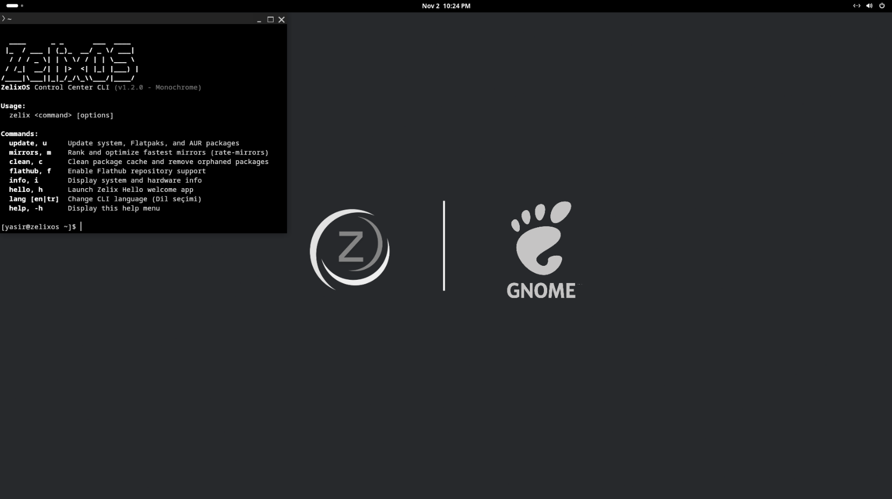
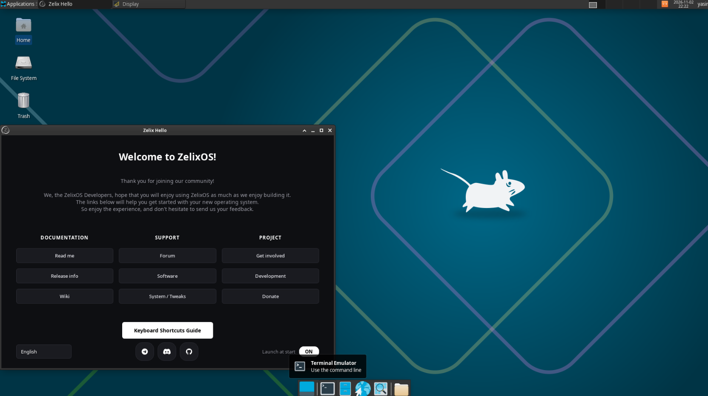
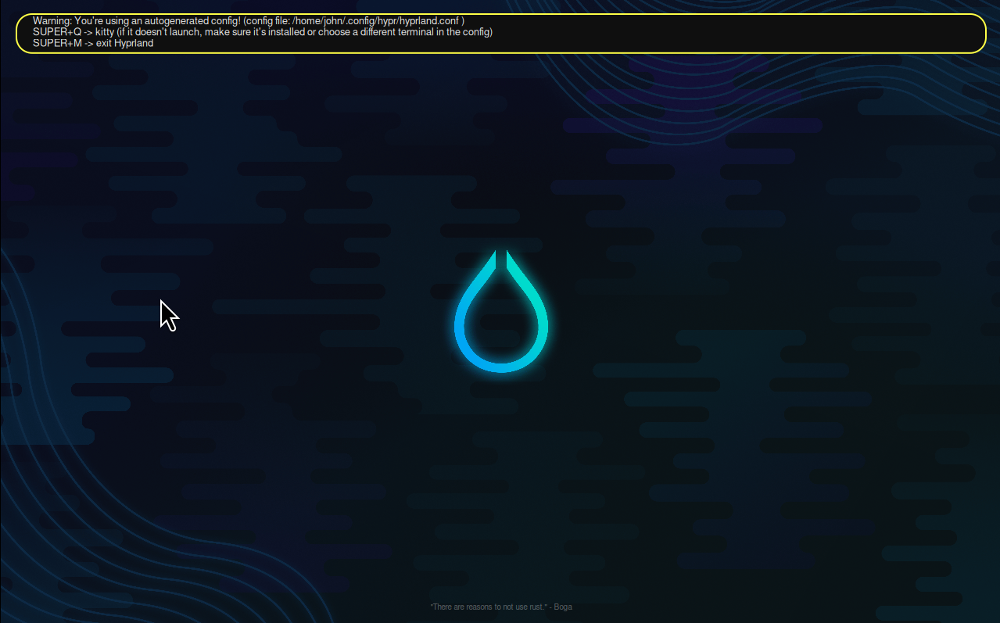
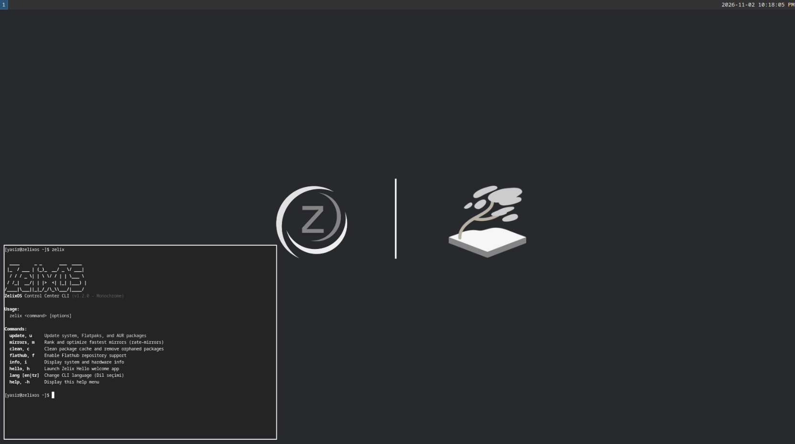
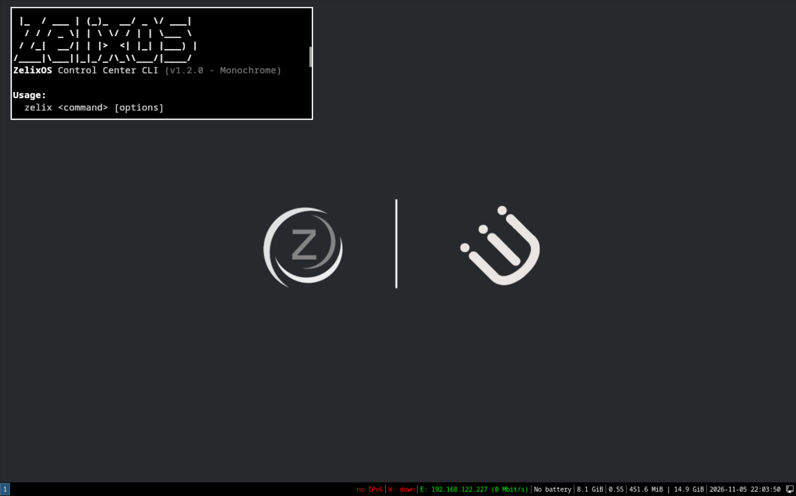
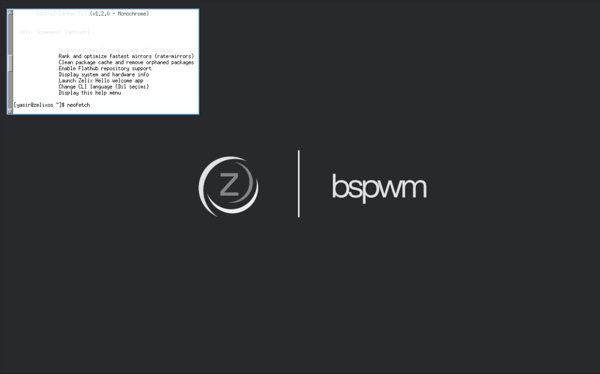

Gallery
See ZelixOS in action
Explore the desktop, setup, and tools that make up ZelixOS. Select an image to see it full size.
ZelixOS'u keşfedin
ZelixOS masaüstünü, kurulumunu ve araçlarını keşfedin. Görseli tam boy görmek için üzerine tıklayın.












